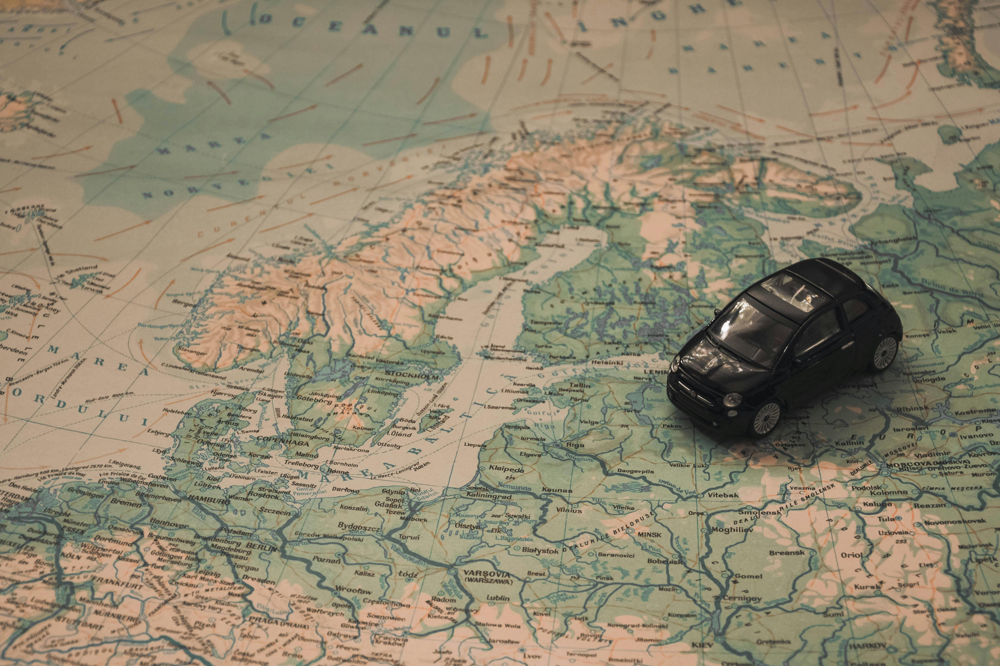

Plan Your Trip
Planning a trip to Taniti is easy when you organize your stay around the experiences you want most. Whether you are looking for beaches, sightseeing, local dining, or outdoor adventure, this page helps you prepare a simple and enjoyable visit.

Start Planning in 3 Steps
1. Choose Your Stay
Decide whether you want a resort, hotel, bed and breakfast, or hostel based on your budget, travel style, and preferred location.
2. Pick Your Activities
Explore beaches, rainforest adventures, volcano tours, sightseeing, fishing trips, and entertainment options.
3. Plan How to Get Around
Review airport access, buses, taxis, rental cars, bike rentals, and walkable areas before you arrive.
Suggested Trip Styles
Relaxing Getaway
Stay near Taniti City or Yellow Leaf Bay and spend time enjoying the beaches, local dining, and scenic views.
Adventure-Focused Trip
Plan a visit around rainforest hikes, zip-lining, snorkeling, fishing tours, and volcano sightseeing.
Mixed Experience
Combine sightseeing, cultural attractions, and entertainment with time for relaxation and dining.
Suggested 3-Day Itinerary
Day 1
- Arrive on Taniti and check into lodging
- Explore Taniti City
- Relax at the beach near Yellow Leaf Bay
- Enjoy dinner at a local restaurant
Day 2
- Take a rainforest hike or zip-line adventure
- Visit local attractions or sightseeing areas
- Spend the evening in Merriton Landing
Day 3
- Visit the volcano or take a boat or bus tour
- Shop or explore local galleries and museums
- Prepare for departure
Helpful Planning Tips
- Choose lodging based on whether you want walkable access to beaches, attractions, or entertainment.
- Visitors staying near Merriton Landing can easily explore dining and activities on foot.
- Travelers interested in outdoor adventure may want to prioritize transportation planning before arrival.
- Review the FAQ page for island information such as currency, safety, language, and local regulations.